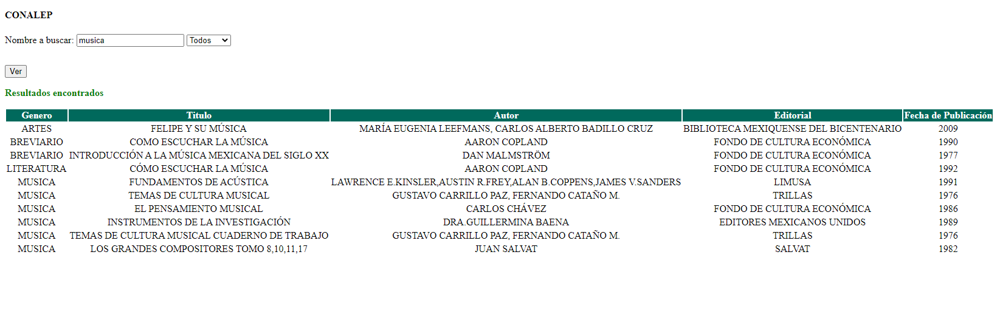
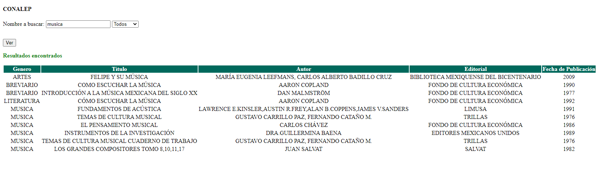

Iniciamos por la parte principal de la página en está encontraremos el título, los logos de la institución, el menú interactivo, el buscador, información del plantel así como el portal principal de la institución, correo, teléfonos, un video referente a la institución y las redes sociales de la misma.
En el menú se busca que la página sea mas dinámica, se implementaron 3 opciones. En la primera esta el inicio, esta es la pagina principal aquí encontraras lo mas importante que es el buscador. En la segunda opcio esta el como se usa la biblioteca virtual que es en donde estamos, aquí solo te explicamos como usarla para que no te rersulte complicado, y la tercera opcion son los comentarios en donde podrás compartir tu opinión,la cual nos servira de retroalimentación.
Para usar el buscador solo basta con posicionarnos en la parabra que dice " Ir a buscar" dentro de nuetra pagina principar, al darle click nos dirigirá a otra página que nos permitira buscar los libros por titulo, autor y editorial.
 
Aquí encontraremos un breve mensaje y una imagen que al darle click nos llevará a un forms el cual tendremos que llenar, en este nos pediran datos como nombre, opinion hacerca de la pagina y algun mensaje que nos sirva de retroalimentacion entre otras cosas.
Estas las encontraremos al final de la página principal y al darle click a cada una de las imagenes nos llevará a esa red sociial, ya sea facebook, twitter o youtube.